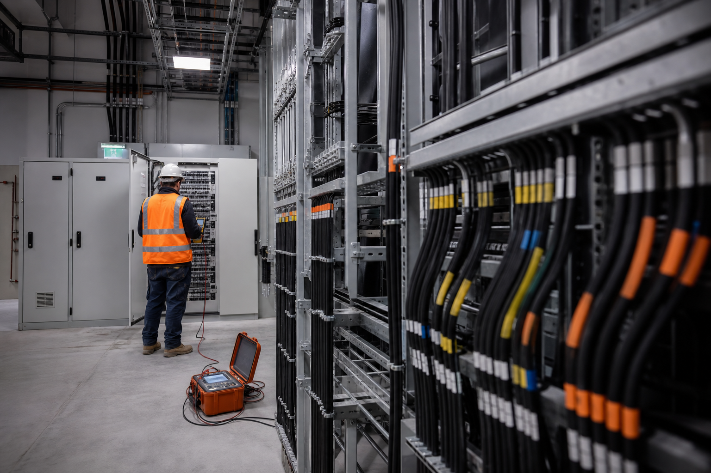

Commission Before You Add Capacity

Rapid expansion can hide problems. When teams add new compute before proving the previous phase, small issues in protection, controls, airflow, or documentation can be multiplied across the campus. A phased commissioning strategy prevents that accumulation.
Establish a Working Baseline
Each deployment block should have defined acceptance criteria for electrical capacity, thermal performance, controls, alarms, and redundancy. Once the phase passes, its measured performance becomes the baseline for the next expansion rather than relying on design assumptions alone.
Use Real Operating Data
Metering and trend data reveal how infrastructure performs under actual workload. Peak demand, temperature approach, pump and fan behavior, power quality, and reserve capacity can all inform the next phase. This makes expansion decisions more accurate and reduces unnecessary oversizing.
Protect Energized Operations
Adding equipment near live systems changes the risk profile. Isolation boundaries, temporary configurations, switching procedures, and rollback plans need to be established before construction begins. Commissioning verifies that the new phase integrates without compromising the capacity already in service.
Close Documentation Before Moving On
Settings, as-built drawings, test records, operating procedures, and asset data should be complete at every handoff. If documentation is deferred until the end of a multi-phase program, the facility can inherit years of uncertainty.
The Bottom Line
Scaling safely is a cycle: build, test, measure, document, then expand. Commissioning each phase protects current operations and turns every deployment into better information for the one that follows.